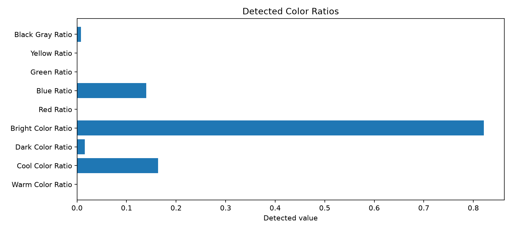
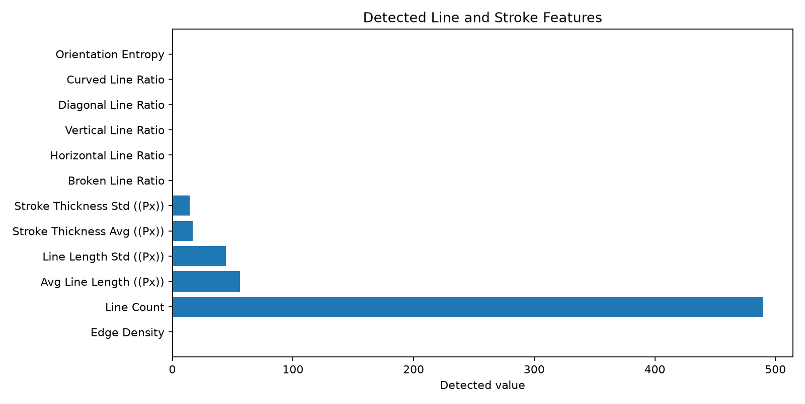
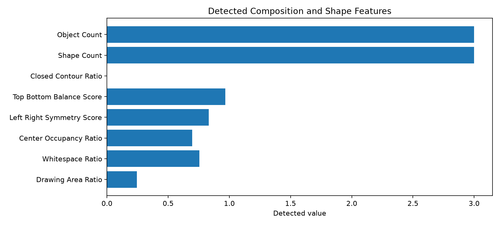
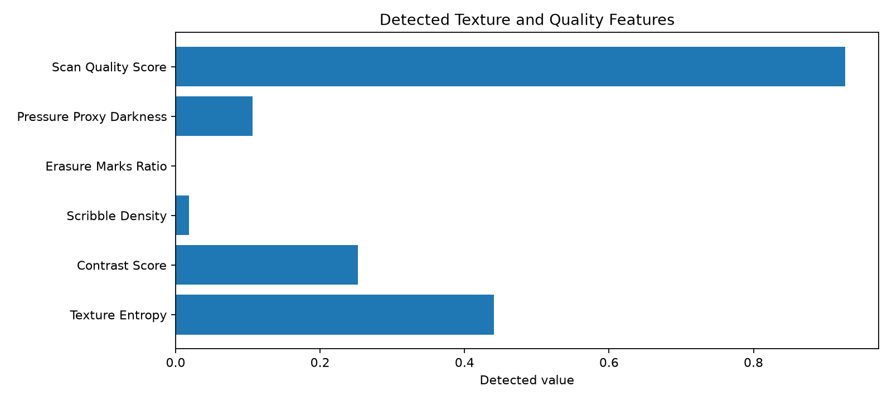
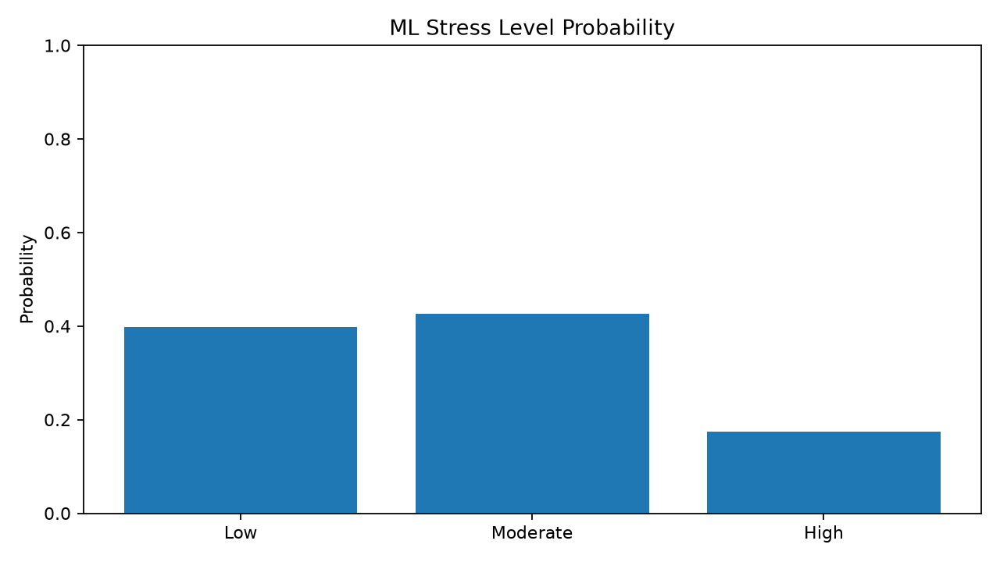
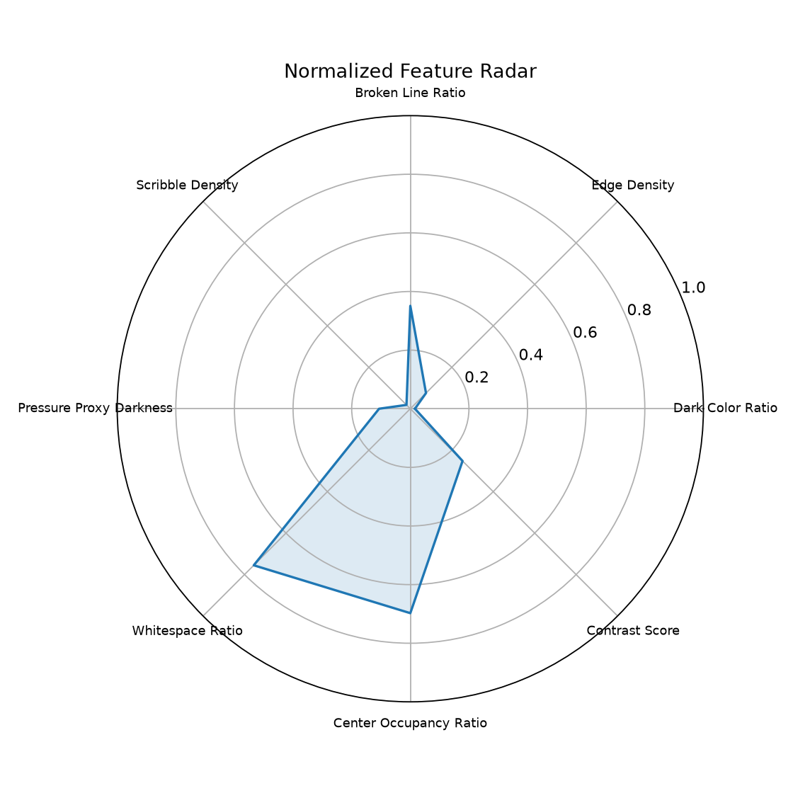

review_required=True, send for trained counselor/safeguarding review.






| Parameter | Value |
|---|---|
| Image Id | a.jpg |
| Age Group | 8-10 |
| Drawing Prompt | Free drawing |
| Scan Quality Score | 0.92691 |
| Mean Hue Deg | 209.31413 |
| Mean Saturation | 0.08468 |
| Mean Value Brightness | 0.89347 |
| Warm Color Ratio | 0.0 |
| Cool Color Ratio | 0.16393 |
| Dark Color Ratio | 0.01589 |
| Bright Color Ratio | 0.82146 |
| Red Ratio | 0.0 |
| Blue Ratio | 0.13952 |
| Green Ratio | 0.0 |
| Yellow Ratio | 0.0 |
| Black Gray Ratio | 0.00786 |
| Dominant Color Count | 2.0 |
| Color Variety Score | 0.02863 |
| Edge Density | 0.07566 |
| Line Count | 490.0 |
| Avg Line Length ((Px)) | 56.08134 |
| Line Length Std ((Px)) | 44.23609 |
| Stroke Thickness Avg ((Px)) | 16.72662 |
| Stroke Thickness Std ((Px)) | 14.38611 |
| Broken Line Ratio | 0.35102 |
| Horizontal Line Ratio | 0.23061 |
| Vertical Line Ratio | 0.14082 |
| Diagonal Line Ratio | 0.62857 |
| Curved Line Ratio | 0.0 |
| Orientation Entropy | 0.69228 |
| Closed Contour Ratio | 0.0 |
| Shape Count | 3.0 |
| Object Count | 3.0 |
| Drawing Area Ratio | 0.24466 |
| Whitespace Ratio | 0.75534 |
| Center Occupancy Ratio | 0.69742 |
| Left Right Symmetry Score | 0.83146 |
| Top Bottom Balance Score | 0.96818 |
| Texture Entropy | 0.44073 |
| Contrast Score | 0.25206 |
| Scribble Density | 0.01851 |
| Erasure Marks Ratio | 0.0 |
| Pressure Proxy Darkness | 0.10653 |
| Predicted Stress Level | Moderate |
| Prob High | 0.17452 |
| Prob Low | 0.3986 |
| Prob Moderate | 0.42688 |
| Predicted Stress Score 0 100 | RETRAIN_MODEL_REQUIRED |
| Regressor Warning | Stress score regressor could not load. Run: python src/train_model.py --data data/child_ar... |
| Review Required | 0.0 |